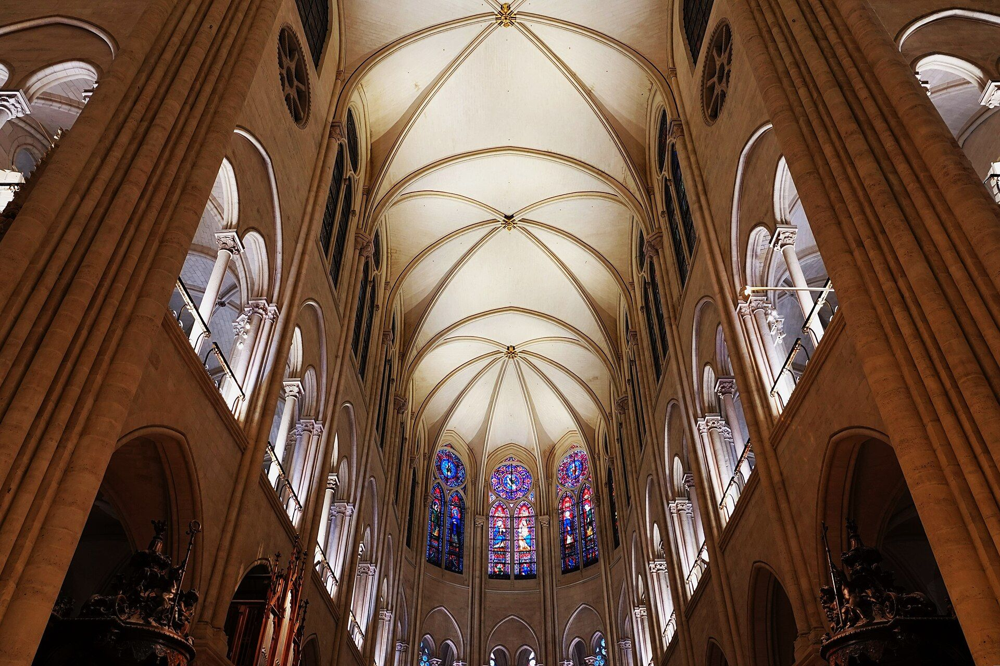
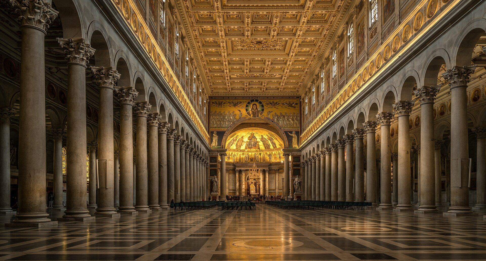

From the marble of Rome’s great basilicas to the stained glass of Gothic cathedrals, sacred architecture offers an extraordinary vocabulary of color, texture, and form. Via Pulchritudinis draws inspiration from the world’s great Catholic cathedrals, basilicas, and shrines, translating their architectural beauty into contemporary personal style.
Every look begins with a place. The architecture of a church, its materials, colors, and atmosphere, becomes the starting point for a contemporary wardrobe.
These churches are sacred places before they are sources of inspiration. They were built for prayer and worship, and the looks here are a small tribute to their beauty, not a substitute for visiting them.
01
The Architecture
Each look begins with a church. Its exterior and interior reveal a distinctive harmony of stone, stained glass, wood, metal, and ornament.
02
The Palette
Five colors are drawn from the building’s architectural character, capturing something of its atmosphere and visual identity.
03
The Wardrobe
Those colors become the inspiration for a contemporary outfit, bringing the beauty of sacred architecture into the art of everyday dress.
The Lookbook
Sacred Spaces. Personal Style.
Every church has its own visual language, shaped by centuries of artistic imagination, local tradition, and religious devotion. Explore contemporary looks inspired by the colors and materials of sacred architecture, from the warm stone of Roman basilicas to the luminous interiors of Gothic cathedrals.
Select a look to discover the church that inspired it, explore its architectural palette, and see how those colors find expression in a contemporary wardrobe.
Any color
No looks match your current selection. Try a different search or adjust the filters.

Notre-Dame de Paris
Restored and reopened in December 2024. Pale limestone, a little gold, and colored light from the glass. A palette can be that simple.
The Church marks the passage of the year through a changing language of color. Violet accompanies Advent and Lent, white and gold mark great celebrations, red recalls the Holy Spirit and the witness of the martyrs, and green characterizes Ordinary Time.
These colors belong first to the Church’s liturgical worship, but they can also provide a quiet source of inspiration for personal style. A tie, a scarf, or a carefully chosen accessory can acknowledge the rhythm of the Christian year without turning the wardrobe into an extension of the sanctuary.
Mary Harper’s Liturgical Style explores this relationship between clothing, the Church calendar, and the habits of everyday life.
The seasons above describe the colors of the Church’s liturgy. The wardrobe notes are optional suggestions for personal devotion, not rules of dress.

Via Pulchritudinis
Basilica of St. Paul Outside the Walls, RomePhoto by Herbert Weber, Hildesheim · CC BY-SA 4.0 · source
Beauty & Faith
The Way of Beauty
The Christian tradition has long recognized beauty as a means of awakening the human person to truth and goodness. From the architecture of great churches to the dignity of the human body, beauty has a place in the Church’s understanding of creation, worship, and everyday life.
The Latin expression via pulchritudinis, or “way of beauty,” gives this journal its name. It also provides a broader framework for considering how we dress, how we present ourselves, and how the material world can reflect something of the dignity of the human person.
Clothing occupies a modest but meaningful place in the wider human experience of beauty. Through color, proportion, material, and craftsmanship, it can express personality, cultural inheritance, and respect for an occasion. The Church’s artistic tradition offers a rich source of inspiration for this everyday art, without prescribing a particular fashion or aesthetic.
Across generations, the popes have spoken of beauty as an expression of human creativity, a reflection of truth, and a means of drawing the human heart toward God. Their reflections offer a foundation for thinking seriously about art, culture, and the dignity of personal appearance.
Pius XII8 November 1957
“Society, so to speak, speaks through the clothing it wears.”
Address to the First International Congress of High Fashion, convened by the Latin Union of High Fashion. Read the address (Italian)
Translated from the Italian, “La società, per così dire, parla col vestito che indossa.” In the same address Pius names hygiene, modesty, and decorum as the purposes clothing serves, and calls fashion an ancient art.
Paul VI8 December 1965
“This world in which we live needs beauty in order not to sink into despair.”
Address to artists at the closing of the Second Vatican Council. Read the address
St. John Paul II4 April 1999
“Beauty is a key to the mystery and a call to transcendence.”
“Beauty is the vocation bestowed on him by the Creator in the gift of ‘artistic talent’.”
Letter to Artists, §3, which also calls beauty “the visible form of the good.” Read the letter
Benedict XVI22 February 2007
“Beauty, then, is not mere decoration, but rather an essential element of the liturgical action…”
Post-synodal apostolic exhortation Sacramentum Caritatis, §35. Read the exhortation
Benedict XVI, quoting Simone Weil21 November 2009
“Beauty is the experimental proof that incarnation is possible.”
Address at the Meeting with Artists in the Sistine Chapel, where Benedict quoted the French philosopher Simone Weil. Read the address
Francis24 November 2013
“Every form of authentic beauty can thus be acknowledged as a path leading to an encounter with the Lord Jesus.”
Apostolic exhortation Evangelii Gaudium, §167, on the via pulchritudinis. Read the exhortation
Leo XIV18 July 2026
“We live in a world where beauty is lacking.”
Greeting at the end of a concert in his honor in the courtyard of the Apostolic Palace at Castel Gandolfo. Read the greeting
Source · Catechism of the Catholic Church, 2521–2524
Modesty
The Catechism presents modesty as an expression of respect for the dignity and mystery of the human person. Although its outward forms vary across cultures and circumstances, modesty remains connected to the way we understand ourselves and encounter others.
“Modesty protects the mystery of persons and their love.”Catechism of the Catholic Church, 2522
The Catechism asks that our bodily demeanor, including our clothing, reflect the respect, solemnity, and joy appropriate to receiving Christ in the Eucharist. It offers a principle of reverence rather than a universal dress code.
“Bodily demeanor (gestures, clothing) ought to convey the respect, solemnity, and joy of this moment when Christ becomes our guest.”Catechism of the Catholic Church, 1387
Sources · Catechism of the Catholic Church, 2288; 1 Corinthians 6:19
Care of the Body
Christianity regards the body as a gift entrusted to our care. Cleanliness, grooming, and attention to personal appearance can express gratitude for that gift, provided they remain ordered to the good of the person rather than vanity or social competition.
“Life and physical health are precious gifts entrusted to us by God. We must take reasonable care of them.”Catechism of the Catholic Church, 2288
The Second Vatican Council called for noble beauty rather than mere sumptuous display in sacred art. Although the Council was addressing the Church’s artistic and liturgical life, the distinction offers a useful point of reflection for personal style. Beauty need not depend on extravagance.
Ordinaries should “strive after noble beauty rather than mere sumptuous display.”Sacrosanctum Concilium, 124
Source · Catechism of the Catholic Church, 2500–2503
Truth, Beauty, and Sacred Art
The Catechism understands beauty in relation to truth and goodness. Sacred art has a particular vocation to lead the human person toward prayer and adoration, reminding us that beauty can communicate meanings beyond immediate utility.
“Genuine sacred art draws man to adoration, to prayer, and to the love of God, Creator and Savior, the Holy One and Sanctifier.”Catechism of the Catholic Church, 2502
Source · St. John Paul II’s Wednesday catecheses on human love
Theology of the Body
John Paul II’s theology of the body places the dignity of the human person at the center of Christian reflection on embodiment. It offers a valuable starting point for considering how clothing relates to personal identity, self-expression, modesty, and the way we encounter others.
Fra Angelico, Crucifixion with St. Dominic, Convent of San Marco, Florence. Frassati was a lay Dominican. Photo by jacquemart · CC0 · source
St. Pier Giorgio Frassati
A Life of Faith, Friendship, and Generosity
St. Pier Giorgio Frassati belonged to one of Turin’s most prominent families, yet his life was distinguished by an extraordinary generosity toward the poor and a profound devotion to Christ.
Photographs of the young saint reveal a man equally at ease in tailored suits, university attire, and the practical clothing of a mountaineer. His sense of style reflected the conventions of his time and social circumstances, but his attachment to material possessions was remarkably slight. He gave clothing and shoes to those in need, continued wearing garments that had been repaired repeatedly, and placed the needs of others before his own comfort.
Frassati’s example offers a compelling perspective on the relationship between personal style and Christian virtue. His elegance was compatible with simplicity, his social standing with humility, and his appreciation for appropriate dress with a freedom from material possessions.
In August 2025, Andrew Likoudis explored this dimension of Frassati’s life for the National Catholic Register, drawing on interviews with Catholic designers, writers, and advocates who reflected on the spiritual significance of his wardrobe.
Frassati dressed appropriately for the occasions and responsibilities of his life, whether among friends, at university, or in the mountains.
Simplicity
His attention to appearance was accompanied by a willingness to mend and continue wearing clothes that had seen better days.
Generosity
His concern for the poor extended to practical acts of charity, including the giving away of clothing and shoes.
Witness
For Frassati, faith was expressed through the ordinary circumstances of daily life. His clothing offers one small but revealing window into a much larger story of Christian discipleship.
Perspectives on Frassati
Six people interviewed for the National Catholic Register on what his clothing reveals about his character. Quotations are reproduced as published.
Quality
“In Catholic Europe, quality and beauty were intertwined and treated as moral goods…”
Clint BranamCatholic Men’s ShopGenerosity
“For him to give away such personal items as clothing shows real generosity.”
Veronica MarrinanCo-founder, Litany NYCSimplicity
“He’s an example for us today to reject the tendency of overconsumption with fast fashion.”
Mary HarperFounder, LiturgicalStyle.comModesty
“In observing Pier Giorgio’s personal style, I’m struck by his modesty in how well his clothing blends in…”
Eliza MontsWriter and Catholic content creatorExample
“Pier Giorgio was very conscious of the impact his behavior had on others.”
“Instantly, one senses that this man owes his confidence to a recognition of and gratitude at being a child of God.”
Emily MalloyFood and floral design editor, Theology of Home
The Directory
People, Books, and Ideas Worth Discovering
A curated selection of designers, stylists, writers, publications, and books exploring the relationship between Catholic faith, beauty, and everyday life.
Some approach the subject through clothing and craftsmanship. Others begin with theology, the home, the liturgical year, or the example of the saints. Together, they offer different perspectives on the place of beauty in Christian culture.
Makers and Stylists
Designers and stylists making clothing with Catholic faith in mind.
Personal Styling · Cincinnati
The Urban Sophisticate Collective
Halie’s styling studio brings together vintage pieces, contemporary fashion, athletic wear, and custom clothing to help clients develop a wardrobe that reflects their individual tastes and daily lives. Services include personal shopping, wardrobe consultations, and styling.
Co-founded by Veronica Marrinan, Litany NYC creates thoughtfully designed women’s clothing informed by Catholic faith and artistic tradition. Its collections draw inspiration from Our Lady and the saints, with an emphasis on craftsmanship and personal dignity.
Clint Branam’s Catholic Men’s Shop approaches men’s clothing through the principles of fit, quality, and personal presentation. Branam also contributed his perspective on St. Pier Giorgio Frassati’s wardrobe to the National Catholic Register.
Mary Harper explores the relationship between fashion, Catholic social teaching, and the liturgical calendar, offering a thoughtful approach to dressing with the seasons of the Church.
An apostolate dedicated to sharing the life and spiritual legacy of St. Pier Giorgio Frassati, offering resources for those interested in his example of friendship, charity, and holiness.
A reading list for those interested in the theology of beauty, the dignity of the human person, Catholic culture, and the relationship between faith and personal style.
Theology of Style
Lillian Fallon · Ascension, 2023
Personal style read through Theology of the Body. Fallon worked as a style editor in New York before joining Litany NYC.